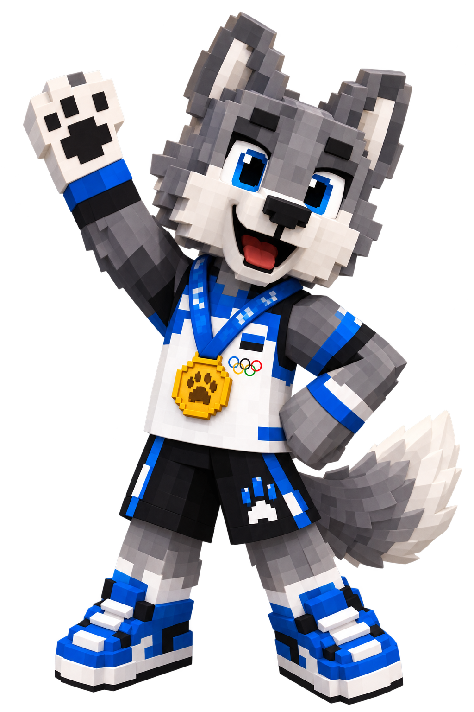
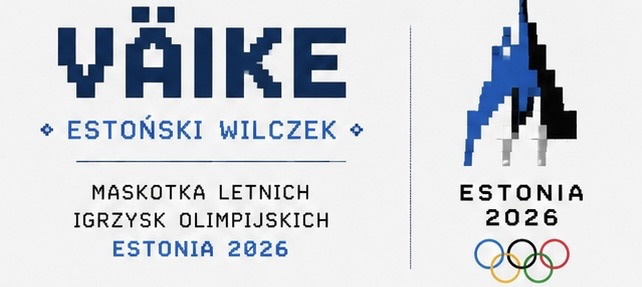

Oficjalna piosenka
Utwór "Beautiful Day" stworzony przez zespół U2 został oficjalną piosenką Szóstych Letnich Igrzysk Olimpijskich w 2026 roku.
Szary Wilk jest zwierzęciem narodowym Estonii zostanie oficjalnym symbolem (maskotką) Szóstych Letnich Igrzysk Olimpijskich w 2026 roku.


Utwór "Beautiful Day" stworzony przez zespół U2 został oficjalną piosenką Szóstych Letnich Igrzysk Olimpijskich w 2026 roku.